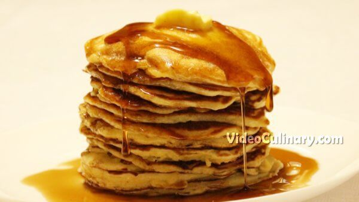

Pancake Recipe
Description
Make delicious, fluffy homemade buttermilk pancakes from scratch!
If you like these, consider making protein pancakes for extra gains B)
Ingredients
- Buttermilk - 350 milliliters
- 3 Eggs
- Flour - 220 grams
- Sugar - 50 grams
- Baking powder - 10 grams
- Baking soda - 2.5 grams
- Salt - 2.5 grams
Steps
- Sift together 220 grams of flour, 2 teaspoons of baking powder, and 0.5 teaspoon of baking soda. Add 50 grams of sugar and 0.5 teaspoon of salt. Mix and set aside.
In a separate bowl, mix 350 ml of buttermilk and 3 eggs.
- Make a well in the flour mixture, and add the milk and eggs. Stir until almost combined, and add 50 grams (2 oz) of melted butter. Do not over mix the batter- it is Ok to have some lumps.
- Heat a pan over medium heat. Lightly oil it, and pour about 1/4 cup of batter onto the pan.
- Once small bubbles form at the center of the pancake, and the edges are brown- flip the pancake. Serve with butter and maple syrup, honey, or with homemade strawberry preserve!